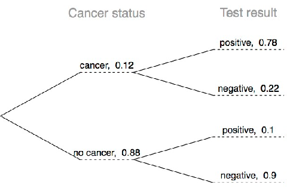
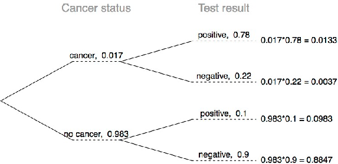
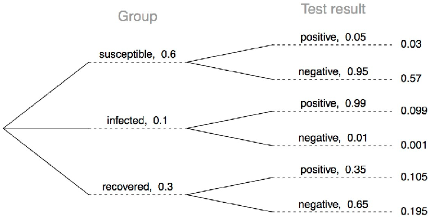

Estadística I
Clase 19: Probabilidad Condicional
Universidad Central de Venezuela- Escuela de Economía. 2025-1
2025-07-01
Nota
Tip
Todas las láminas que se muestran a continuación pertenecen al proyecto OpenIntroStats openintro.org/os, y se encuentra disponible en su formato original en el siguiente enlace
Recaída
Investigadores asignaron aleatoriamente a 72 consumidores crónicos de cocaína en tres grupos: desipramina (antidepresivo), litio (tratamiento estándar para la cocaína) y un placebo. Los resultados del estudio se resumen a continuación.
La siguiente tabla:
| Tratamiento | Recaída | Sin Recaída | Total |
|---|---|---|---|
| desipramina | 10 | 14 | 24 |
| Litio | 18 | 6 | 24 |
| Placebo | 20 | 4 | 24 |
| Total | 48 | 24 | 72 |
Probabilidad Marginal
¿Cuál es la probabilidad de que un paciente haya recaído?
| Tratamiento | Recaída | Sin Recaída | Total |
|---|---|---|---|
| desipramina | 10 | 14 | 24 |
| Litio | 18 | 6 | 24 |
| Placebo | 20 | 4 | 24 |
| Total | 48 | 24 | 72 |
Probabilidad Marginal
¿Cuál es la probabilidad de que un paciente haya recaído?
| Tratamiento | Recaída | Sin Recaída | Total |
|---|---|---|---|
| desipramina | 10 | 14 | 24 |
| Litio | 18 | 6 | 24 |
| Placebo | 20 | 4 | 24 |
| Total | 48 |
24 | 72 |
\(P(\text{recaída}) = 48/72 \sim 0.67\)
Probabilidad Marginal
La probabilidad marginal es la probabilidad de que ocurra un solo evento, sin tener en cuenta el resultado de otros eventos. Se obtiene a partir de una distribución de probabilidad conjunta sumando (o integrando, en el caso de variables continuas) sobre todos los posibles resultados de los otros eventos.
Definición: Es la probabilidad de un evento individual, calculada a partir de una tabla de probabilidad conjunta.
Fórmula: Dada una distribución de probabilidad conjunta para los eventos A y B, la probabilidad marginal de A, P(A), se calcula sumando las probabilidades conjuntas sobre todos los posibles resultados de B:
\(P(A) = \sum_{i} P(A, B_{i})\)
Probabilidad Conjunta
¿Cuál es la probabilidad de que un paciente haya recibido el antidepresivo (desipramina) y haya recaído?
| Tratamiento | Recaída | Sin Recaída | Total |
|---|---|---|---|
| desipramina | 10 | 14 | 24 |
| Litio | 18 | 6 | 24 |
| Placebo | 20 | 4 | 24 |
| Total | 48 |
24 | 72 |
Probabilidad Conjunta
¿Cuál es la probabilidad de que un paciente haya recibido el antidepresivo (desipramina) y haya recaído?
| Tratamiento | Recaída | Sin Recaída | Total |
|---|---|---|---|
| desipramina | 10 |
14 | 24 |
| Litio | 18 | 6 | 24 |
| Placebo | 20 | 4 | 24 |
| Total | 48 | 24 | 72 |
\(P(\text{recaída y desipramina}) = 10/72 \sim 0.14\)
Probabilidad Conjunta
Es la probabilidad de que dos o más eventos ocurran simultáneamente. Se denota como \(P(A∩B)\) o \(P(A,B)\) y se lee como “la probabilidad de A y B”.
Definición: Para dos eventos A y B, la probabilidad conjunta es la probabilidad de que ambos eventos sucedan al mismo tiempo.
Fórmula: Si los eventos son dependientes, la probabilidad conjunta se calcula utilizando la regla de la multiplicación:
\(P(A∩B)=P(A∣B)⋅P(B)\) o \(P(A∩B)=P(B∣A)⋅P(A)\)
Si los eventos son independientes, la fórmula se simplifica a:
\(P(A∩B)=P(A)⋅P(B)\)
Probabilidad Condicional
La probabilidad condicional del resultado de interés A dada una condición B se calcula como:
\(P(A|B) = \frac{P(A \text{ y } B)}{P(B)}\)
Probabilidad Condicional
La probabilidad condicional del resultado de interés A dada una condición B se calcula como: \(P(A|B) = \frac{P(A \text{ y } B)}{P(B)}\)
Ejemplo
¿Cuál es la probabilidad de que un paciente reciba como tratamiento desipramina y tenga una recaida?
\(P(\text{recaída | desipramina}) = \\ \frac{P(\text{recaída y desipramina})}{P(\text{desipramina})}\)
Probabilidad Condicional
\(\frac{P(\text{recaída y desipramina})}{P(\text{desipramina})}\)
| Tratamiento | Recaída | Sin Recaída | Total |
|---|---|---|---|
| desipramina | 10 |
14 | 24 |
| Litio | 18 | 6 | 24 |
| Placebo | 20 | 4 | 24 |
| Total | 48 | 24 | 72 |
Probabilidad Condicional
La probabilidad condicional del resultado de interés A dada una condición B se calcula como:
\[P(A|B) = \frac{P(A \text{ y } B)}{P(B)}\]
\[P(\text{recaída | desipramina}) = \\ \\ \frac{P(\text{recaída y desipramina})}{P(\text{desipramina})} = \frac{10/72}{24/72} = \frac{10}{24} \approx 0.42 \]
Probabilidad Condicional (cont.)
Si sabemos que un paciente recibió el antidepresivo (desipramina), ¿cuál es la probabilidad de que haya recaído?
| Tratamiento | Recaída | Sin Recaída | Total |
|---|---|---|---|
desipramina |
10 |
14 |
24 |
| Litio | 18 | 6 | 24 |
| Placebo | 20 | 4 | 24 |
| Total | 48 | 24 | 72 |
Probabilidad Condicional (cont.)
Si sabemos que un paciente recibió algún desipramina, ¿cuál es la probabilidad de que haya recaído?
| Tratamiento | Recaída | Sin Recaída | Total |
|---|---|---|---|
desipramina |
10 |
14 | 24 |
| Litio | 18 | 6 | 24 |
| Placebo | 20 | 4 | 24 |
| Total | 48 | 24 | 72 |
\(P(\text{recaída | desipramina}) = 10/24 \sim 0.42\)
Probabilidad Condicional (cont.)
Si sabemos que un paciente recibió algún tratamiento (desipramina,litio o placebo), ¿cuál es la probabilidad de que haya recaído?
- \(P(\text{recaída | desipramina}) = 10/24 \sim 0.42\)
- \(P(\text{recaída | litio}) = 18/24 \sim 0.75\)
- \(P(\text{recaída | placebo}) = 20/24 \sim 0.83\)
Probabilidad Condicional (cont.)
Si sabemos que un paciente ha recaído, ¿cuál es la probabilidad de que haya recibido el antidepresivo (desipramina)?
| Tratamiento | Recaída | Sin Recaída | Total |
|---|---|---|---|
| desipramina | 10 | 14 | 24 |
| Litio | 18 | 6 | 24 |
| Placebo | 20 | 4 | 24 |
| Total | 48 | 24 | 72 |
Probabilidad Condicional (cont.)
Si sabemos que un paciente ha recaído, ¿cuál es la probabilidad de que haya recibido el antidepresivo (desipramina)?
| Tratamiento | Recaída | Sin Recaída | Total |
|---|---|---|---|
| desipramina | 10 |
14 | 24 |
| Litio | 18 | 6 | 24 |
| Placebo | 20 | 4 | 24 |
| Total | 48 |
24 | 72 |
\(P(\text{desipramina | recaída}) = 10/48 \sim 0.21\)
Probabilidad Condicional (cont.)
Si sabemos que un paciente ha recaído, ¿cuál es la probabilidad que haya recibido cada uno de los tratamientos?
- \(P(\text{desipramina | recaída}) = 10/48 \sim 0.21\)
- \(P(\text{litio | recaída}) = 18/48 \sim 0.38\)
- \(P(\text{placebo | recaída}) = 20/48 \sim 0.42\)
Probabilidad Condicional
La probabilidad condicional es la probabilidad de que ocurra un evento A, dado que ya ha ocurrido otro evento B. Se denota como \(P(A∣B)\) y se lee como “la probabilidad de A dado B”.
Definición: Mide la probabilidad de un evento, condicionada a la ocurrencia de otro evento. El conocimiento de que B ha ocurrido reduce el espacio muestral original a solo los resultados en los que B está presente.
Fórmula: \(P(A∣B)=P(B)P(A∩B)\)
Siempre que \(P(B)>0\)
Regla General de la Multiplicación
- Anteriormente vimos que si dos eventos son independientes, su probabilidad conjunta es simplemente el producto de sus probabilidades. Si no se cree que los eventos sean independientes, la probabilidad conjunta se calcula de manera ligeramente diferente.
- Si A y B representan dos resultados o eventos, entonces: \(P(A \text{ y } B) = P(A|B) \times P(B)\)
- Es útil pensar en A como el resultado de interés y en B como la condición.
Independencia y Probabilidades Condicionales
Considere la siguiente distribución (hipotética) de género y especialidad de estudiantes en una clase de introducción a la estadística:
| Género | Ciencias Sociales | No Ciencias Sociales | Total |
|---|---|---|---|
| Femenino | 30 | 20 | 50 |
| Masculino | 30 | 20 | 50 |
| Total | 60 | 40 | 100 |
- ¿Cuál es la probabilidad de que un estudiante al azar sea de ciencias sociales?
- La probabilidad de que un estudiante seleccionado al azar sea de ciencias sociales es \(60/100 = 0.6\).
Independencia y Probabilidades Condicionales
Considere la siguiente distribución (hipotética) de género y especialidad de estudiantes en una clase de introducción a la estadística:
| Género | Ciencias Sociales | No Ciencias Sociales | Total |
|---|---|---|---|
| Femenino | 30 | 20 | 50 |
| Masculino | 30 | 20 | 50 |
| Total | 60 | 40 | 100 |
- ¿Cuál es la probabilidad de que una estudiante seleccionado al azar sea de ciencias sociales, dado que es mujer?
- La probabilidad de que un estudiante seleccionado al azar sea de ciencias sociales, dado que es mujer, es \(30/50 = 0.6\).
Independencia y Probabilidades Condicionales
Considere la siguiente distribución (hipotética) de género y especialidad de estudiantes en una clase de introducción a la estadística:
| Género | Ciencias Sociales | No Ciencias Sociales | Total |
|---|---|---|---|
| Femenino | 30 | 20 | 50 |
| Masculino | 30 | 20 | 50 |
| Total | 60 | 40 | 100 |
- La probabilidad de que un estudiante seleccionado al azar sea de ciencias sociales, dado que es mujer, es \(30/50 = 0.6\).
- Dado que \(P(\text{Cienc.Soc.|M})\) también es igual a 0.6, la especialidad de los estudiantes en esta clase no depende de su género: \(P(\text{Cien.Soc.|F}) = P(\text{Cienc.Soc.})\).
Independencia y Probabilidades Condicionales (cont.)
Genéricamente, si \(P(A|B) = P(A)\), entonces se dice que los eventos A y B son independientes.
- Conceptualmente: Dar B no nos dice nada sobre A.
- Matemáticamente: Sabemos que si los eventos A y B son independientes, \(P(A \text{ y } B) = P(A) \times P(B)\). Entonces,
\(P(A|B) = \frac{P(A \text{ y } B)}{P(B)} = \frac{P(A) \times P(B)}{P(B)} = P(A)\)
Independencia y Probabilidades Condicionales
Dos eventos, A y B, son independientes si la ocurrencia de uno no afecta la probabilidad de ocurrencia del otro.
Definición: La independencia se puede definir formalmente utilizando la probabilidad condicional. Los eventos A y B son independientes si y solo si: \(P(A∣B)=P(A)yP(B∣A)=P(B)\)
Esto significa que saber que B ocurrió no cambia la probabilidad de A, y viceversa.
Relación Clave: Una consecuencia directa de la definición de independencia es la simplificación de la regla de la multiplicación para la probabilidad conjunta:
Si A y B son independientes, entonces: \(P(A∩B)=P(A)⋅P(B)\)
Esta es a menudo la prueba más fácil para determinar si dos eventos son independientes. Si esta igualdad se cumple, los eventos son independientes; de lo contrario, son dependientes.
Detección de Cáncer de Mama
- La Sociedad Americana del Cáncer estima que alrededor del 1.7% de las mujeres tienen cáncer de mama. http://www.cancer.org/cancer/cancerbasics/cancer-prevalence
- La Fundación Susan G. Komen For The Cure afirma que la mamografía identifica correctamente a cerca del 78% de las mujeres que realmente tienen cáncer de mama. http://ww5.komen.org/BreastCancer/AccuracyofMammograms.html
- Un artículo publicado en 2003 sugiere que hasta el 10% de todas las mamografías resultan en falsos positivos para pacientes que no tienen cáncer. http://www.ncbi.nlm.nih.gov/pmc/articles/PMC1360940
Nota: Estos porcentajes son aproximados y muy difíciles de estimar.
Invirtiendo Probabilidades
Cuando una paciente se somete a una prueba de detección de cáncer de mama, hay dos afirmaciones contrapuestas: la paciente tiene cáncer y la paciente no tiene cáncer. Si una mamografía da un resultado positivo, ¿cuál es la probabilidad de que la paciente realmente tenga cáncer?
\(P(C|+) = \frac{P(\text{C y +})}{P(+)}\)

Nota: Los diagramas de árbol son útiles para invertir probabilidades: se nos da \(P(+|C)\) y se nos pide \(P(C|+)\).
Invirtiendo Probabilidades
\(P(C|+) = \frac{P(\text{C y +})}{P(+)}\)

\(P(C|+) = \frac{P(\text{C y +})}{P(+)} = \frac{0.0133}{0.0133 + 0.0983} = 0.12\)
Práctica
Supongamos que una mujer que se hace la prueba una vez y obtiene un resultado positivo, quiere volver a hacerse la prueba. En la segunda prueba, ¿cuál deberíamos asumir que es la probabilidad de que esta mujer específica tenga cáncer?
0.017
0.12
0.0133
0.88
Resultado
- 0.12
Práctica
¿Cuál es la probabilidad de que esta mujer tenga cáncer si esta segunda mamografía también arrojó un resultado positivo? \(P(C|+) = \frac{P(C \text{ y } +)}{P(+)}\)
- 0.09
- 0.08
- 0.48
- 0.52
Resultado
- \(\frac{0.0936}{0.0936 + 0.088} = 0.52\)
Teorema de Bayes
La fórmula de probabilidad condicional que hemos visto hasta ahora es un caso especial del Teorema de Bayes, que es aplicable incluso cuando los eventos tienen más de dos resultados.
Teorema de Bayes
La fórmula de probabilidad condicional que hemos visto hasta ahora es un caso especial del Teorema de Bayes, que es aplicable incluso cuando los eventos tienen más de dos resultados.
Teorema de Bayes
\[ P(\text{resultado } A_1 \text{ de variable 1 | resultado B de variable 2}) \]
\(=\frac{P(B|A_1)P(A_1)}{P(B|A_1)P(A_1) + P(B|A_2)P(A_2) + \cdot\cdot\cdot + P(B|A_k)P(A_k)}\)
donde \(A_2, \cdot\cdot\cdot, A_k\) representan todos los demás resultados posibles de la variable 1.
Actividad de Aplicación: Invirtiendo Probabilidades
Un modelo epidemiológico común para la propagación de enfermedades es el modelo SIR, donde la población se divide en tres grupos: Susceptibles, Infectados y Recuperados. Este es un modelo razonable para enfermedades como la varicela, donde una sola infección generalmente proporciona inmunidad a infecciones posteriores. A veces, estas enfermedades también pueden ser difíciles de detectar.
Imagina una población en medio de una epidemia donde el 60% de la población se considera susceptible, el 10% está infectada y el 30% está recuperada. La única prueba para la enfermedad es precisa el 95% de las veces para individuos susceptibles, el 99% para individuos infectados, pero solo el 65% para individuos recuperados. (Nota: En este caso, “precisa” significa que devuelve un resultado negativo para individuos susceptibles y recuperados, y un resultado positivo para individuos infectados).
Dibuja un árbol de probabilidad para reflejar la información dada anteriormente. Si un individuo ha dado positivo, ¿cuál es la probabilidad de que esté realmente infectado?
Actividad de Aplicación (cont.)
\(P(\text{inf}|+) = \frac{P(\text{inf y +})}{P(+)}\)

Actividad de Aplicación (cont.)
\(P(\text{inf}|+) = \frac{P(\text{inf y +})}{P(+)} = \frac{0.099}{0.03 + 0.099 + 0.105} \approx 0.423\)
Teorema de Bayes
Es un resultado fundamental en la teoría de la probabilidad que describe la probabilidad de un evento, basado en el conocimiento previo de condiciones que podrían estar relacionadas con el evento. Es una forma de actualizar nuestras creencias sobre una hipótesis a la luz de nueva evidencia.
Definición: El teorema relaciona la probabilidad condicional de dos eventos. Permite calcular la probabilidad de una causa (hipótesis) a partir del efecto observado (evidencia).
Fórmula: \(P(A∣B)=P(B)P(B∣A)⋅P(A)\)
Donde:
\(P(A∣B)\) es la probabilidad a posteriori.
\(P(B∣A)\) es la verosimilitud (likelihood).
\(P(A)\) es la probabilidad a priori.
\(P(B)\) es la evidencia marginal, que se puede calcular usando la ley de la probabilidad total:
\(P(B)=P(B∣A)P(A)+P(B∣¬A)P(¬A)\)
¿Funciona el nuevo filtro de SPAM?
El Problema: Imaginemos que creamos un filtro para detectar correos SPAM. Si un correo tiene la palabra “oferta”, ¿qué tan probable es que sea SPAM?
Los Datos que Conocemos
Vamos a definir lo que sabemos sobre los correos que llegan:
Probabilidad de ser SPAM (A Priori):
El 20% de todos los correos que recibimos son SPAM.
\(P(\text SPAM)=0.20\)
Probabilidad de que un SPAM contenga “oferta”:
El 50% de los correos SPAM contienen la palabra “oferta”.
\(P(\text "oferta"∣\text SPAM)=0.50\)
Probabilidad de que un correo legítimo (NO SPAM) contenga “oferta”:
Solo el 1% de los correos legítimos contienen la palabra “oferta”.
\(P(\text "oferta"∣\text NO\ SPAM)=0.01\)
Si un correo nuevo contiene la palabra “oferta”, ¿cuál es la probabilidad de que sea SPAM?
En notación de probabilidad, estamos buscando:
\[P(\text SPAM∣\text"oferta")=?\]
Paso 1 - Calcular el Numerador
El numerador es la parte fácil, ya que tenemos esos datos directamente.
\(Numerador=P(\text "oferta"∣\text SPAM)⋅P(\text SPAM)\)
Sustituyendo nuestros valores:
\(Numerador=0.50×0.20=0.10\)
Este valor (10%) representa la probabilidad de que un correo sea SPAM y que contenga la palabra “oferta”.
Paso 2 - Calcular el Denominador (La Evidencia)
El denominador, \(P(\text"oferta")\), es la probabilidad total de que cualquier correo contenga la palabra “oferta”. Un correo puede contener “oferta” de dos maneras:
Siendo SPAM y conteniendo “oferta”.
No siendo SPAM y conteniendo “oferta”.
Usamos la Ley de la Probabilidad Total:
\(P(B)=P(B∣A)P(A)+P(B∣¬A)P(¬A)\\P(\text "oferta")= [P(\text "oferta"∣\text SPAM)\text P(SPAM)]+[P(\text "oferta"∣\text NO\ SPAM)P(\text NO\ SPAM)]\)
Calculamos:
\(P(\text NO\ SPAM)=1−P(\text SPAM)=1−0.20=0.80\)
\(P(\text"oferta")=(0.50\times 0.20)+(0.01\times 0.80)\)
\(P(\text"oferta")=0.10+0.008=0.108\)
La probabilidad total de que un correo contenga la palabra “oferta” es del 10.8%.
Paso 3 - Unir Todo y Obtener el Resultado
Ahora dividimos el numerador (Paso 1) entre el denominador (Paso 2).
\(P(\text SPAM∣\text "oferta")= 0.10/0.108\\P(\text SPAM∣\text "oferta")≈0.926\)
Análisis Resultado
Si recibes un correo que contiene la palabra “oferta”, hay una probabilidad del 92.6% de que sea SPAM.
El Teorema de Bayes nos permitió actualizar nuestra creencia inicial (la probabilidad de que un correo fuera SPAM era solo del 20%), al poder incorporar la nueva evidencia que viene dada por el uso de la palabra “oferta”.